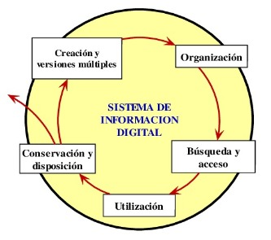

Ciclo de vida de los objetos dentro de un sistema digital
 |
Creación y versiones múltiples:
El objeto entra dentro de un sistema digital por el hecho de haber sido creado digitalmente o bien porque ha sido convertido a un formato digital. Es posible que se produzcan múltiples versiones de ese objeto por razones de conservación, investigación, difusión o incluso para fines relacionados con la creación de un producto. Puede que el agente creador incluya algunos metadatos administrativos y descriptivos.
Organización:
Los objetos se organizan manual o automáticamente dentro de la estructura de un sistema digital. Se pueden crear metadatos adicionales para ese objeto por medio de registros, catalogación y procesos de indexación.
Búsqueda y acceso:
Los usuarios pueden buscar y acceder a los objetos informáticos almacenados y distribuidos. El sistema de los ordenadores crea metadatos que rastrean los algoritmos de acceso, las operaciones de los usuarios y la efectividad del sistema en cuanto a almacenamiento y extracción de datos.
Utilización:
Los objetos hallados se utilizan, se reproducen y se modifican. Se puede crear metadatos relacionados con las anotaciones de los usuarios, el control de los derechos y la verificación de las distintas versiones.
Conservación y disposición:
Los objetos informáticos se someten a procesos de regeneración y migración, así como a controles de integridad para asegurar su disponibilidad. Los objetos inactivos o innecesarios pueden ser desechados. Los metadatos pueden documentar tanto la conservación como la eliminación de los objetos. de un objeto informático.
Las diferentes fases por las que pasan los objetos informáticos a lo largo de su existencia en un entorno digital hacen que adquieren estratos de metadatos con los que pueden asociarse de modos distintos.
A medida que los diseñadores de sistemas asuman la necesidad de incorporar y gestionar metadatos en los sistemas de información, irán apareciendo nuevos mecanismos para asociar los metadatos con los objetos informáticos.